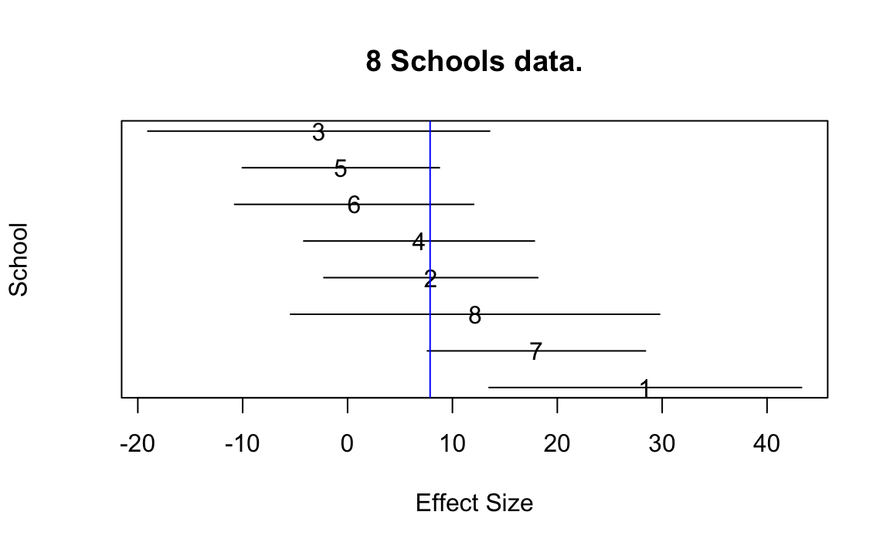
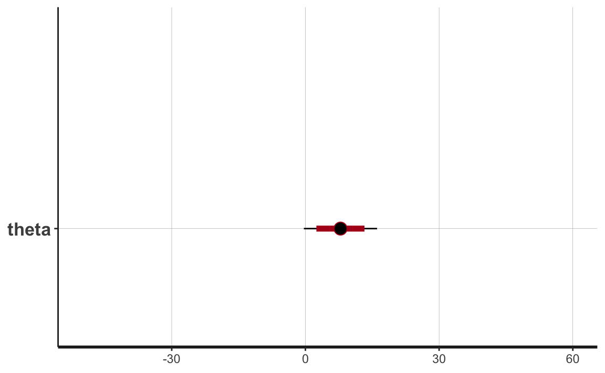
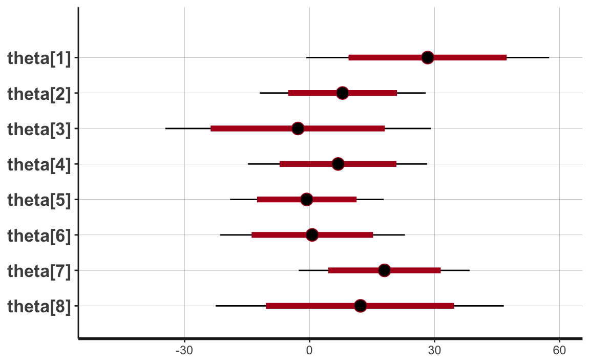
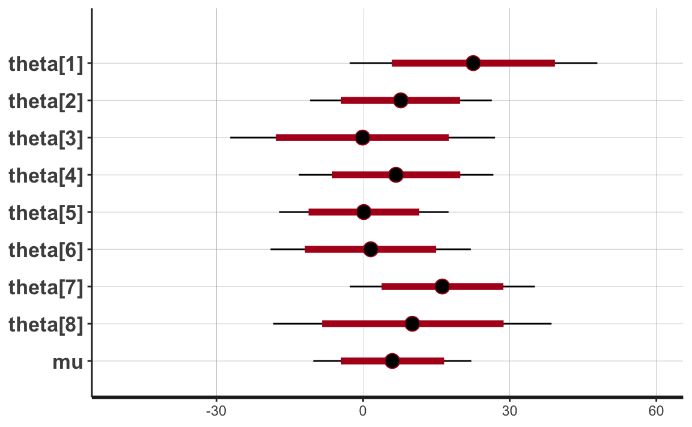

Capitolo 31 Modello gerarchico
31.1 La struttura dei dati
Ricordiamo che una delle finalità più comuni di un modello è la specificazione delle relazioni di tipo causa-effetto, allo scopo di interpretare e prevedere i fenomeni reali. Per fare questo, è importante mettere in evidenza, da una molteplicità di informazioni ottenute su numerose unità statistiche, gli aspetti essenziali presenti nei dati. La scelta modello statistico da usare per l’analisi dipende dalle caratteristiche e dalla struttura dei dati.
La struttura dei dati può essere semplice o complessa, e ciò condiziona la scelta del modello statistico da usare per l’analisi.
- I dati a struttura semplice sono quelli per i quali non si rilevano particolari tipi di dipendenze o l’esistenza di particolari raggruppamenti delle osservazioni.
- I dati a struttura complessa sono quelli per i quali le unità statistiche si trovano suddivise in sottoinsiemi all’interno dei quali possono essere specificate ipotesi diverse sulle componenti di errore del modello statistico. Tali raggruppamenti si possono presentare a uno o più livelli.
Le strutture complesse dei dati possono essere suddivise tra le cosiddette strutture nested e quelle non-nested.
31.2 Struttura Nested
Una struttura nested è quella in cui la gerarchia comporta l’esistenza di sottoinsiemi nidificati di osservazioni. In termini matematici una struttura nested è una partizione in gruppi di un insieme di unità. Ad esempio, gli studenti della scuola elementare (livello-1) di una città, sono nested nelle classi (livello-2) in cui studiano, a loro volta nested nelle scuole di appartenenza (livello-3), nested nel distretto di riferimento (livello-4). Nel caso di dati che hanno una struttura nested, le osservazioni individuali non risultano generalmente indipendenti: gli studenti di una stessa classe tendono ad avere un livello di formazione simile, a causa dei processi di selezione o a causa della comune storia che condividono. Una caratteristica fondamentale dei dati con struttura nested è dunque che gli individui che fanno parte del medesimo gruppo sono più somiglianti fra loro rispetto a quelli appartenenti a gruppi diversi.
Un caso particolare di struttura nested è quello delle cosiddette misure ripetute. Le misure ripetute sono un esempio di struttura gerarchica che corrisponde alla situazione nella quale la stessa variabile è misurata in più di una occasione per ogni soggetto. Nell’analisi di dati a misure ripetute gli individui possono essere pensati come unità di secondo livello e le osservazioni ripetute come unità di primo livello.
31.3 Struttura Non-Nested
I dati hanno struttura non-nested quando non è definibile una partizione. Un esempio potrebbe derivare dai dati sullo studio di una qualche forma di disagio psicologico di un insieme di persone caratterizzate dal tipo di occupazione, il luogo di residenza e il luogo di lavoro. Questo è un caso non-nested in quanto la classificazione delle unità statistiche in base alle diverse variabili sopra considerate non produce la stessa suddivisione. Nell’esempio precedente di struttura non-nested i deti vengono detti cross-classified. I dati hanno struttura cosiddetta cross-classified quando ogni unità è classificata in base a due o più criteri tra loro non ordinati gerarchicamente.
31.4 Ragioni di utilizzo della struttura gerarchica
È importante includere nella formulazione del modello i vincoli che derivano dalla struttura dei dati perché ignorare la struttura di raggruppamento sottostante porta ad una violazione del presupposto di indipendenza che alla base dei modelli che abbiamo discusso fino a questo punto: le osservazioni all’interno di un gruppo sono infatti fra loro più simili rispetto a quelle di altri gruppi. I dati che hanno una struttura gerarchica, se vengono analizzati con modelli statistici che ignorano la dipendenza tra le osservazioni può produrre conclusioni fuorvianti. La metodologia multilivello fornisce un insieme di strumenti adatti ad analizzare simultaneamente variabili classificate a livelli differenti di gerarchia, con riferimento a modelli statistici che specificano le varie possibili forme di dipendenza. I modelli multilivello sono in grado di rendere conto dei vari livelli di osservazione: quello relativo all’individuo e quello cosiddetto contestuale che deriva da aggregazioni di individui.
Storicamente, le analisi di dati gerarchicamente organizzati sono state inizialmente realizzate mediante le tecniche standard (come l’analisi della varianza o l’analisi di regressione) spostando tutte le variabili su un solo livello di interesse. Ciò avveniva mediante due distinte procedure: aggregazione e disaggregazione. L’aggregazione è lo spostamento di variabili originariamente osservate su un livello basso della gerarchia verso un livello superiore. Al contrario, la disaggregazione è lo spostamento di variabili verso un livello più basso della gerarchia.
Mediante l’aggregazione dei dati (detta pooling) si ignora la struttura gerarchica dei dati. Si ipotizza che le differenze tra i gruppi siano spiegate solo dalle variabili esplicative \(X\) (covariate), ignorando i possibili effetti della struttura gerarchica nei dati. Analizzare variabili che appartengono a differenti livelli della gerarchia su un singolo e comune livello può risultare inadeguato e presentare degli inconvenienti, che diventano tanto più gravi quanto più la gerarchia è rilevante nella spiegazione del fenomeno analizzato. In particolare, l’aggregazione comporta una sostanziale perdita di informazioni e, di conseguenza, l’analisi statistica perde precisione.
Dall’altro, quando i dati vengono disaggregati (no pooling), i test statistici ordinari considerano che i valori disaggregati siano, in genere, informazioni indipendenti provenienti dall’insieme della unità di basso livello: i dati appartenenti a cluster diversi vengono analizzati separatamente. Invece, nelle situazioni in cui i dati sono gerarchicamente organizzati, i diversi cluster di dati non sono in genere indipendenti. I test statistici tradizionali sono basati sull’assunto di indipendenza tra tutte le osservazioni, e se questa ipotesi risulta violata, le stime degli errori standard, calcolate attraverso le procedure statistiche convenzionali, risultano distorte.
I modelli statistici che consentono di ottenere questo risultato si chiamano lineari misti, o modelli lineari gerarchici/multilivello, e sono diventati uno strumento fondamentale della ricerca sperimentale in psicologia, in linguistica e nelle scienze cognitive, dove i progetti di ricerca a misure ripetute sono la norma. In questo Capitolo esploreremo alcune tecniche che consentono di rendere conto della struttura gerarchica presente nei dati e discuteremo due esempi: il famoso problema delle otto scuole e il modello Random Intercept Model.
31.5 Il problema delle 8 scuole
Il classico problema delle otto scuole (Rubin 1981; questo esempio è anche discusso nel Capitolo 5 di Gelman et al. 1995) fornisce uno degli esempi più semplici di dati organizzati in maniera gerarchica e viene spesso usato per illustrare l’utilità di modellazione gerarchica. Il problema considera l’efficacia dei programmi di coaching SAT condotti in parallelo in otto scuole.
Per conto del Servizio Prove Educative è stato condotto uno studio per analizzare gli effetti di speciali programmi di coaching per SAT-V (Scholastic Attitude Test-Verbal) in ciascuna delle otto scuole superiori. La variabile di esito in ogni studio era il punteggio su un’amministrazione speciale del SAT-V, un test a scelta multipla standardizzato somministrato dall’Educational Testing Service e utilizzato per aiutare i college a prendere decisioni di ammissione; i punteggi possono variare tra 200 e 800, con media circa 500 e deviazione standard circa 100. Gli esami SAT sono progettati per resistere a sforzi a breve termine diretti specificamente al miglioramento delle prestazioni del test; invece sono progettati per riflettere le conoscenze acquisite e le abilità sviluppate in molti anni di istruzione. Tuttavia, ciascuna delle otto scuole in questo studio ha considerato il suo programma di coaching a breve termine molto efficace nell’aumentare i punteggi SAT. Inoltre, non vi era alcuna ragione preliminare per ritenere che uno degli otto programmi fosse più efficace di un altro o che alcuni fossero più simili negli effetti l’uno all’altro che a qualsiasi altro.
Per ciascuna delle otto scuole (\(J\) = 8) abbiamo un effetto del trattamento stimato e un errore standard di stima dell’effetto \(\sigma_j\). I dati sono i seguenti.
schools <- tibble(
row.names = c("A","B","C","D","E","F","G","H"),
effect = c(28.39,7.94,-2.75,6.82,-.64,.63,18.01,12.16),
sigma = c(14.9, 10.2, 16.3, 11.0, 9.4, 11.4, 10.4, 17.6)
)
schools
#> # A tibble: 8 × 3
#> row.names effect sigma
#> <chr> <dbl> <dbl>
#> 1 A 28.4 14.9
#> 2 B 7.94 10.2
#> 3 C -2.75 16.3
#> 4 D 6.82 11
#> 5 E -0.64 9.4
#> 6 F 0.63 11.4
#> 7 G 18.0 10.4
#> 8 H 12.2 17.6Iniziamo calcolando una misura dell’effetto medio ponderato in cui il punteggio di ogni scuola viene ponderato in base alla precisione della misura (uno sul quadrato dell’errore standard).
schools$w <- 1 / schools$sigma^2
schools_mean <- sum(schools$w * schools$effect) / sum(schools$w)
schools_mean
#> [1] 7.870546Un grafico con i dati (media \(\pm\) 1 SE) è fornito di seguito.

Prima di adattare il modello gerarchico bayesiano, consideriamo due metodi non gerarchici più semplici, i quali stimando gli effetti degli otto esperimenti eseguendo un pooling completo dei dati oppure considerando le scuole come indipendenti (no pooling). Vedremo perché nessuno di questi approcci è adeguato per i dati di questo esempio.
31.5.1 Modello di complete pooling
Un esame superficiale dei dati potrebbe suggerire che alcuni programmi di coaching hanno effetti moderati (nell’intervallo 18–28 punti), la maggior parte ha piccoli effetti (0–12 punti) e due hanno piccoli effetti negativi; tuttavia, quando prendiamo atto degli errori standard di questi effetti stimati, vediamo che è difficile distinguere statisticamente tra i risultati di questi esperimenti. Potremmo dunque considerare i risultati degli otto esperimenti come esiti (condizionalmente) indipendenti dello stesso processo generativo. Di conseguenza potremmo decidere di procedere con un’analisi aggregata nella quale le otto scuole sono considerate come un unico campione.
model_string <- "
data {
int<lower=0> J; // # schools
array[J] real y; // estimated treatment
array[J] real<lower=0> sigma; // std err of effect
}
parameters {
real theta; // pooled school effect
}
model {
y ~ normal(theta, sigma);
}
"I dati in un formato appropriato per Stan sono i seguenti.
school8_dat <- list(
J = nrow(schools),
y = schools$effect,
sigma = schools$sigma
)Compiliamo il modello descritto in precedenza e eseguiamo il campionamento MCMC.
writeLines(model_string, con = "code/hmod_2.stan")
file <- file.path("code", "hmod_2.stan")
mod <- cmdstan_model(file)
fit2 <- mod$sample(
data = school8_dat,
iter_sampling = 20000L,
iter_warmup = 10000L,
seed = 84735,
chains = 4L,
refresh = 0
)
#> Running MCMC with 4 sequential chains...
#>
#> Chain 1 finished in 0.3 seconds.
#> Chain 2 finished in 0.3 seconds.
#> Chain 3 finished in 0.2 seconds.
#> Chain 4 finished in 0.2 seconds.
#>
#> All 4 chains finished successfully.
#> Mean chain execution time: 0.3 seconds.
#> Total execution time: 1.4 seconds.Nel caso di un’analisi per dati aggregati, la nostra incertezza sulla misura dell’effetto comune è di circa 20 punti, se utilizziamo un livello di certezza soggettiva del 95%. Visualizziamo la stima a posteriori con l’istruzione seguente, dove
- ci_level: 0.8 (80% intervals)
- outer_level: 0.95 (95% intervals)
output2_stanfit <- rstan::read_stan_csv(fit2$output_files())
plot(output2_stanfit) + xlim(-50, 60)
In base ad un’analisi aggregata (complete pooling) concludiamo che i dati sono realizzazioni indipendenti di una v.c. \(\sim \mathcal{N}(\mu = 7.87, \sigma = 4.20)\).
fit2$summary()
#> # A tibble: 2 × 10
#> variable mean median sd mad q5 q95 rhat ess_bulk ess_tail
#> <chr> <dbl> <dbl> <dbl> <dbl> <dbl> <dbl> <dbl> <dbl> <dbl>
#> 1 lp__ -2.79 -2.52 0.713 0.320 -4.23 -2.28 1.00 37470. 51279.
#> 2 theta 7.87 7.88 4.20 4.23 0.962 14.7 1.00 28992. 44067.Ma è ragionevole concludere quanto detto sopra? Un primo problema dell’analisi aggregata è che è impossibile fare inferenza sui gruppi, ovvero, nel caso presente, sugli effetti dei diversi metodi di coaching (e questa era la motivazione stessa dell’analisi).
Un secondo problema è più strettamente statistico. Se assumiamo che il processo generativo sia \(\mathcal{N}(\mu = 7.87, \sigma = 4.20)\), allora possiamo chiederci quale sia la probabilità di osservare i dati del campione (o valori ancora più estremi). Il valore più estremo del nostro campione è 28.4. Se il modello generativo fosse \(\mathcal{N}(\mu = 7.87, \sigma = 4.20)\), la probabilità di osservare i dati della scuola 1 sarebbe estremamente piccola.
1 - pnorm(28.4, 7.87, 4.20)
#> [1] 5.090814e-07Un’analisi aggregata (modello di complete pooling), dunque, non è neppure in grado di rendere conto dei dati del campione osservato (ci dice che un certo dato non dovrebbe verificarsi; ma l’abbiamo osservato). Il modello di complete pooling, dunque, non sembra adeguato per i dati considerati.
31.5.2 Modello no pooling
Avendo rifiutato il modello compelte pooling, consideriamo ora il modello che si trova all’estremo opposto (modello no pooling). Eseguiamo dunque un’analisi disaggregata nella quale ogni scuola è trattata in maniera indipendente dalle altre. In linguaggio Stan, il modello no pooling può essere formulato nel modo seguente.
model_string <- "
data {
int<lower=0> J; // # schools
array[J] real y; // estimated treatment
array[J] real<lower=0> sigma; // std err of effect
}
parameters {
array[J] real theta; // school effect
}
model {
y ~ normal(theta, sigma);
}
"Eseguiamo l’analisi.
writeLines(model_string, con = "code/hmod_1.stan")
file <- file.path("code", "hmod_1.stan")
mod <- cmdstan_model(file)
fit1 <- mod$sample(
data = school8_dat,
iter_sampling = 20000L,
iter_warmup = 10000L,
seed = 84735,
chains = 4L,
refresh = 0
)
#> Running MCMC with 4 sequential chains...
#>
#> Chain 1 finished in 0.5 seconds.
#> Chain 2 finished in 0.5 seconds.
#> Chain 3 finished in 0.5 seconds.
#> Chain 4 finished in 0.6 seconds.
#>
#> All 4 chains finished successfully.
#> Mean chain execution time: 0.5 seconds.
#> Total execution time: 2.5 seconds.I risultati sono i seguenti.
fit1$summary()
#> # A tibble: 9 × 10
#> variable mean median sd mad q5 q95 rhat ess_bulk ess_tail
#> <chr> <dbl> <dbl> <dbl> <dbl> <dbl> <dbl> <dbl> <dbl> <dbl>
#> 1 lp__ -3.99 -3.66 2.00 1.85 -7.78 -1.36 1.00 39035. 56040.
#> 2 theta[1] 28.3 28.3 14.8 14.8 4.04 52.8 1.00 117783. 64274.
#> 3 theta[2] 7.92 7.91 10.2 10.2 -8.84 24.7 1.00 116382. 62867.
#> 4 theta[3] -2.80 -2.79 16.3 16.3 -29.6 23.9 1.00 120074. 61773.
#> 5 theta[4] 6.83 6.85 11.0 11.0 -11.2 24.8 1.00 114806. 63734.
#> 6 theta[5] -0.686 -0.685 9.36 9.37 -16.0 14.7 1.00 116956. 63114.
#> 7 theta[6] 0.642 0.618 11.3 11.4 -18.0 19.3 1.00 113520. 62691.
#> 8 theta[7] 18.0 18.0 10.5 10.5 0.656 35.2 1.00 114082. 61308.
#> # … with 1 more rowVisualizziamo l’incertezza delle stime a posteriori.
output_stanfit <- rstan::read_stan_csv(fit1$output_files()) Si vede che le stime degli effetti degli otto esperimenti producono intervalli di credibilità al 95% che sono quasi completamente sovrapposti. L’ampiezza degli intervalli, ad un grado di certezza soggettiva del 95%, è di circa 50 punti.
plot(output_stanfit) + xlim(-50, 60)
Dal momento che ciascuna stima dipende unicamente dai dati di una singola osservazione, l’inferenza sui parametri sconosciuti del modello no pooling è estremamente rumorosa.
31.5.3 Modello partial pooling
Avendo concluso che i modelli complete pooling e non-pooling sono inadeguati, consideriamo ora un modello gerarchico. In generale, i modelli gerarchici sono basati sulla seguente idea: sebbene ogni gruppo sia unico, essendo stato campionato dalla stessa popolazione, tutti i gruppi sono collegati e quindi potrebbero contenere informazioni preziose l’uno sull’altro. Questa informazione gerarchica è fornita dagli iper-parametri del modello.
La struttura ipotizzata da un modello gerarchico per i dati considerati è la seguente. Il modello gerarchico ipotizza che il risultato di ciascuna scuola sia la realizzazione di una v.c. avente media \(\theta_j\). L’oggetto dell’inferenza sono i valori \(\theta_j\), con \(i = 1, \dots, 8\). Il modello gerarchico ipotizza che i parametri \(\theta_j\) siano tra loro legati in qualche modo. In maniera più precisa, il modello assume che \(\theta_j\) siano realizzazioni casuali dei un unico processo generativo sottostante. Il modello assume che tale processo generativo abbia la seguente forma: \(\mathcal{N}(\mu, \tau)\). I parametri \(\mu\) e \(\tau\) sono detti iper-parametri e condizionano i valori possibili che i parametri \(\theta_j\) possono assumere. Nella versione più semplice di questo modello gerarchico, l’iper-parametro \(\mu\) viene considerato ignoto ma \(\tau\) viene assunto come conosciuto. Ciò conduce alla formulazione del modello partial pooling. Nel caso presente assumiamo \(\tau = 25\).
Inseriamo in input a Stan l’informazione relativa a \(\tau\).
school8_dat2 <- list(
J = nrow(schools),
y = schools$effect,
sigma = schools$sigma,
tau = 25
)Formuliamo il modello di partial pooling nel modo seguente.
model_string <- "
data {
int<lower=0> J; // # schools
array[J] real y; // estimated treatment
array[J] real<lower=0> sigma; // std err of effect
real<lower=0> tau; // variance between schools
}
parameters {
array[J] real theta; // school effect
real mu; // mean for schools
}
model {
mu ~ normal(0, 15);
theta ~ normal(mu, tau);
y ~ normal(theta, sigma);
}
"Eseguiamo l’analisi.
writeLines(model_string, con = "code/hmod_3.stan")
file <- file.path("code", "hmod_3.stan")
mod <- cmdstan_model(file)
fit3 <- mod$sample(
data = school8_dat2,
iter_sampling = 20000L,
iter_warmup = 10000L,
seed = 84735,
chains = 4L,
refresh = 0
)
#> Running MCMC with 4 sequential chains...
#>
#> Chain 1 finished in 0.5 seconds.
#> Chain 2 finished in 0.5 seconds.
#> Chain 3 finished in 0.6 seconds.
#> Chain 4 finished in 0.6 seconds.
#>
#> All 4 chains finished successfully.
#> Mean chain execution time: 0.6 seconds.
#> Total execution time: 2.6 seconds.Esaminiamo la distribuzione a posteriori delle stime dei parametri.
output3_stanfit <- rstan::read_stan_csv(fit3$output_files())
plot(output3_stanfit) + xlim(-50, 60)
Per il modello di partial pooling, ad un livello di certezza soggettiva del 95%, le stime a posteriori dei parametri \(\theta_j\) sono comprese in un intervallo pari a circa 40 punti. Si noti che, in relazione al modello no pooling, è diminuita la nostra incertezza rispetto alle stime dei parametri \(\theta_j\).
31.5.4 Modello gerarchico
Il modello di partial pooling assume che la dispersione dei parametri \(\theta_j\) sia conosciuta. Ma ovviamente ciò non è vero. Arriviamo così alla formulazione del modello gerarchico nel quale vengono stimati entrambi gli iper-parametri \(\mu\) e \(\tau\), dove \(\mu\) rappresenta l’effetto medio del trattamento e \(\tau\) descrive la varianza tra le scuole. Il modello gerarchico è dunque il seguente.
\[ \begin{align} y_j &\sim \mathcal{N}(\theta_j, \sigma_j), \quad j = 1, \dots, 8\notag\\ \theta_j &\sim \mathcal{N}(\mu, \tau), \quad j = 1, \dots, 8 \end{align} \]
dove ciascun \(\sigma_j\) è considerato noto.
Lo scriviamo in linguaggio Stan nel modo seguente.
model_string <- "
data {
int<lower=0> J; // # schools
array[J] real y; // estimated treatment
array[J] real<lower=0> sigma; // std err of effect
}
parameters {
array[J] real theta; // school effect
real mu; // mean for schools
real<lower=0> tau; // variance between schools
}
model {
mu ~ normal(0, 15);
tau ~ cauchy(0, 30);
theta ~ normal(mu, tau);
y ~ normal(theta, sigma);
}
"Eseguiamo l’analisi.
writeLines(model_string, con = "code/hmod_4.stan")
file <- file.path("code", "hmod_4.stan")
mod <- cmdstan_model(file)
fit4 <- mod$sample(
data = school8_dat,
iter_sampling = 20000L,
iter_warmup = 10000L,
seed = 84735,
chains = 4L,
refresh = 0
)
#> Running MCMC with 4 sequential chains...
#>
#> Chain 1 finished in 1.0 seconds.
#> Chain 2 finished in 1.3 seconds.
#> Chain 3 finished in 1.0 seconds.
#> Chain 4 finished in 1.0 seconds.
#>
#> All 4 chains finished successfully.
#> Mean chain execution time: 1.1 seconds.
#> Total execution time: 4.7 seconds.Le stime dei parametri sono le seguenti.
output4_stanfit <- rstan::read_stan_csv(fit4$output_files())
print(output4_stanfit, pars = c("theta", "mu", "tau"), probs = c(.025, .5, .975))
#> Inference for Stan model: hmod_4-202205032342-1-380e90.
#> 4 chains, each with iter=30000; warmup=10000; thin=1;
#> post-warmup draws per chain=20000, total post-warmup draws=80000.
#>
#> mean se_mean sd 2.5% 50% 97.5% n_eff Rhat
#> theta[1] 10.23 0.50 7.93 -2.14 9.06 29.52 248 1.02
#> theta[2] 7.14 0.26 6.05 -4.70 6.98 19.59 536 1.01
#> theta[3] 5.61 0.12 7.34 -10.90 5.81 19.56 3766 1.00
#> theta[4] 6.87 0.30 6.29 -5.61 6.78 19.77 439 1.01
#> theta[5] 4.89 0.11 6.04 -8.37 5.05 16.10 3163 1.00
#> theta[6] 5.54 0.18 6.46 -8.42 5.61 17.88 1317 1.01
#> theta[7] 9.49 0.48 6.66 -1.65 8.86 24.66 193 1.03
#> theta[8] 7.60 0.22 7.35 -6.79 7.24 23.62 1159 1.01
#> mu 6.94 0.29 4.71 -2.09 6.92 16.43 272 1.02
#> tau 5.93 0.39 4.85 0.64 4.74 18.11 154 1.03
#>
#> Samples were drawn using NUTS(diag_e) at Mar Mag 03 23:42:38 2022.
#> For each parameter, n_eff is a crude measure of effective sample size,
#> and Rhat is the potential scale reduction factor on split chains (at
#> convergence, Rhat=1).Visualizziamo la distribuzione a posteriori delle stime dei parametri e degli iper-parametri.
plot(output4_stanfit) + xlim(-50, 60)
Con un grado di certezza soggettiva del 95%, le stime a posteriori dei parametri \(\theta_j\) risultano comprese in un intervallo pari a circa 30 punti. Il modello gerarchico, dunque, produce stime degli effetti \(\theta_j\) a cui è associata l’incertezza più piccola rispetto a tutti gli altri casi esaminati in precedenza.
31.5.5 Interpretazione
In conclusione, il modello gerarchico consente di ottenere stime degli effetti \(\theta_j\) degli otto esperimenti più precise di quelle ottenute dal modelo non gerarchico no-pooling e dal modello gerarchico di partial pooling. Si noti inoltre che, con \(\tau \rightarrow \infty\), le stime di un modello gerarchico diventano sempre più simili a quelle di un modello no-pooling, vale a dire, ciascuna delle stime dell’effetto del trattamento della scuola diventa via via più indipendente dalle altre stime. Con \(\tau \rightarrow 0\), le stime di un modello gerarchico diventano sempre più simili alle stime di un modello di pooling completo, vale a dire, tutti gli effetti del trattamento della scuola tendono a diventare via via più simili all’effetto medio del gruppo.
31.6 Modelli lineari ad intercetta casuale
Esaminiamo ora un modello gerarchico più complesso per l’analisi di un set di dati a misure ripetute con due condizioni. I dati sono stati raccolti da Gibson and Wu (2013; si veda Sorensen and Vasishth 2015). La variabile dipendente rt dell’esperimento di Gibson and Wu (2013) è il tempo di lettura in millisecondi del soggetto di una proposizione relativa in un testo. I tempi di reazione sono stati registrati in due condizioni: in presenza di un sostantivo riferito al soggetto della proposizione, oppure in presenza di un sostantivo riferito all’oggetto della proposizione.
I dati di Gibson and Wu (2013) provengono da un esperimento con 37 soggetti e 15 item. Gli item erano presentati in un disegno a quadrato latino (ovvero, un disegno nel quale vengono considerate tutte le combinazioni possibili), il che produce 37 \(\times\) 15 = 555 dati. Risultano mancanti otto dati di un soggetto (id 27), il che porta ad un totale di 555 − 8 = 547 dati. Le prime righe del data.frame sono mostrate di seguito:
rdat <- read.table(here::here("data", "gibsonwu2012data.txt"))
head(rdat)
#> subj item type pos word correct rt region type2
#> 7 1 13 obj-ext 6 抓住 - 1140 de1 object relative
#> 20 1 6 subj-ext 6 男孩 - 1197 de1 subject relative
#> 32 1 5 obj-ext 6 撞 - 756 de1 object relative
#> 44 1 9 obj-ext 6 監視 - 643 de1 object relative
#> 60 1 14 subj-ext 6 機師 - 860 de1 subject relative
#> 73 1 4 subj-ext 6 男孩 - 868 de1 subject relativeLa manipolazione sperimentale viene descritta dalla variabile type (oppure, in maniera equivalente, dalla variabile type2). Nell’analisi, type viene ricodificata nella colonna so la quale assume valore -0.5 se il sostantivo era riferito al soggetto e +0.5 se il sostantivo era riferito all’oggetto della frase.
rdat$so <- ifelse(rdat$type == "subj-ext", -0.5, 0.5)
unique(rdat$so)
#> [1] 0.5 -0.5Calcoliamo la media dei tempi di reazione su scala logaritmica e per poi ritrasformare il risultato sulla scala originale:
rdat %>%
group_by(type2) %>%
summarise(
avg = exp(mean(log(rt), na.rm = TRUE))
)
#> # A tibble: 2 × 2
#> type2 avg
#> <chr> <dbl>
#> 1 object relative 551.
#> 2 subject relative 589.Quando il sostantivo si riferisce al soggetto, i tempi di reazione sono più lenti di circa 30 ms.
Questa descrizione dei dati, però non tiene conto né delle differenze tra i soggetti né delle differenze tra gli item. Per tenere in considerazioni queste diverse fonti della variabilità dei dati è necessario utilizzare un modello gerarchico.
31.6.1 Modello ad effetti fissi
Iniziamo con un modello “ad effetti fissi” che non tiene conto della struttura gerarchica dei dati, ovvero del fatto che c’è una covariazione all’interno dei cluster definiti dalle variabili “soggetto” e “item”.
Ipotizziamo dunque di descrivere i dati mediante il seguente modello di regressione lineare:
\[\begin{equation} \log rt_i = \beta_0 + \beta_1 so_i + \varepsilon_i. \end{equation}\]
Questo è il caso nel quale usiamo il modello lineare per fare inferenza sulla differenza tra le medie di due gruppi. In precedenza abbiamo codificato i due gruppi con 0 e 1. In tali circostanze \(\alpha\) fornisce una stima del valore atteso della media del gruppo codificato con \(x = 0\) e il parametro \(\beta\) fornisce una stima del valore atteso della differenza tra le medie dei due gruppi.
La codifica -0.5 e +0.5 per le due modalità della variabile so ha un effetto simile. Il parametro \(\alpha\) del modello di regressione lineare fornisce una stima del valore atteso della media di tutti i valori \(y\) (trascurando la classificazione in gruppi) mentre, come in precedenza, il parametro \(\beta\) fornisce una stima del valore atteso della differenza tra le medie dei due gruppi.
I tempi di reazione (variabile dipendente rt, ovvero tempo di lettura) hanno una distribuzione caratterizzata da una forte asimmetria positiva. Se trasformiamo i dati in maniera logaritmica, i dati trasformati si distribuiscono in maniera approssimativamente Normale. In maniera equivalente, si può dire che i dati grezzi seguono la distribuzione lognormale.
Il modello di regressione lineare assume dunque la forma seguente:
\[\begin{equation} rt \sim \mbox{LogNormal}(\beta_0 + \beta_1 so,\sigma). \end{equation}\]
In tale modello \(\beta_0\) corrisponde al valore atteso della media generale di \(\log\) rt e \(\beta_1 so\) codifica la differenza \(\E(\log rt_{o}) - \E(\log rt_{s})\) quando si passa dalla condizione nella quale il sostantivo è riferito all’oggetto alla condizione nella quale il sostantivo è riferito al soggetto – valori negativi significano che i tempi di reazioni sono maggiori nella condizione s che nella condizione o.
Ricordiamo che questo non è un modello gerarchico, ma un semplice modello di regressione lineare nel quale assumiamo che la componente erratica del modello segua una distribuzione lognormale.
In un tale modello useremo le seguenti distribuzioni a priori:
\[\begin{equation} \begin{aligned} \beta[1] &\sim Normal(6, 1.5) \\ \beta[2] &\sim Normal(0, 1.0) \\ \sigma &\sim Cauchy(0, 1)\\ \end{aligned} \end{equation}\]
In Stan, il modello precedente è specificato nel modo seguente.
modelString = "
data {
int<lower=1> N; //number of data points
array[N] real rt; //reading time
array[N] real<lower=-0.5, upper=0.5> so; //predictor
}
parameters {
vector[2] beta; //fixed intercept and slope
real<lower=0> sigma_e; //error sd
}
model {
real mu;
// likelihood
beta[1] ~ normal(6, 1.5);
beta[2] ~ normal(0, 1);
sigma_e ~ cauchy(0, 1);
for (i in 1 : N) {
mu = beta[1] + beta[2] * so[i];
rt[i] ~ lognormal(mu, sigma_e);
}
}
"
writeLines(modelString, con = "code/fixeff_model.stan")Compiliamo il modello.
file <- file.path("code", "fixeff_model.stan")
mod <- cmdstan_model(file)I dati sono contenuti nella lista stan_dat.
stan_dat <- list(
rt = rdat$rt,
so = rdat$so,
N = nrow(rdat)
)Eseguiamo il campionamento MCMC.
fit3 <- mod$sample(
data = stan_dat,
iter_sampling = 4000L,
iter_warmup = 2000L,
seed = SEED,
chains = 4L,
refresh = 0
)Otteniamo dunque le seguenti medie a posteriori.
fit3$summary()
#> # A tibble: 4 × 10
#> variable mean median sd mad q5 q95 rhat ess_bulk
#> <chr> <dbl> <dbl> <dbl> <dbl> <dbl> <dbl> <dbl> <dbl>
#> 1 lp__ -2614. -2.61e+3 1.22 0.993 -2.62e+3 -2.61e+3 1.00 8108.
#> 2 beta[1] 6.35 6.34e+0 0.0121 0.0121 6.33e+0 6.37e+0 1.00 16919.
#> 3 beta[2] -0.0653 -6.52e-2 0.0241 0.0237 -1.05e-1 -2.52e-2 1.00 15675.
#> 4 sigma_e 0.629 6.29e-1 0.00850 0.00861 6.15e-1 6.43e-1 1.00 16349.
#> # … with 1 more variable: ess_tail <dbl>Trasformiamo fit3 in un oggetto di classe stanfit.
stanfit <- rstan::read_stan_csv(fit3$output_files())Calcoliamo gli intervalli di credibilità al 95%.
ci95 <- rstanarm::posterior_interval(
as.matrix(stanfit),
prob = 0.95
)
round(ci95, 3)
#> 2.5% 97.5%
#> beta[1] 6.321 6.369
#> beta[2] -0.113 -0.017
#> sigma_e 0.613 0.646
#> lp__ -2617.020 -2612.420Se esponenziamo i dati su scala lognormale ritorniamo alla scala dei dati grezzi. L’effetto medio, sulla scala in millisecondi, si trova dunque nel modo seguente.
post <- extract(stanfit, permuted = TRUE)
exp(mean(post$beta[, 1] + post$beta[, 2])) - exp(mean(post$beta[, 1]))
#> [1] -35.99588Se ignoriamo la struttura gerarchica dei dati, concludiamo che l’effetto della manipolazione sperimentale corrisponde ad una differenza medie nel tempo di lettura nelle due condizioni di 36 ms, con tempi di lettura maggiore quando il sostantivo era riferito al soggetto della proposizione.
31.6.2 Modello gerarchico
Un modello non gerarchico (detto ad effetti fissi) è inappropriato per il campione di Gibson and Wu (2013) perché non tiene conto del fatto che i dati sono a misure ripetute, ovvero, con più ripetizioni per ogni soggetto e per ogni item. Il modello ad effetti usato sopra viola l’assunzione di indipendenza degli errori. Inoltre, i coefficienti di effetti fissi \(\beta_0\) e \(\beta_1\) rappresentano le medie calcolate aggregando i dati sulla dimensione dei soggetti e degli item. Così facendo, non si tiene in considerazione il fatto che alcuni soggetti sono più veloci e altri più lenti della media, e il fatto che alcuni item sono stati letti più velocemente e altri in maniera più lenta della media. Ovvero, il modello non considera informazioni che sono presenti nei dati.
Un modello gerarchico, invece, rende conto delle diverse fonti di variabilità che derivano da questo disegno sperimentale, ovvero la variabilità dovuta alle differenze tra i soggetti e la variabilità dovuta alle differenze tra gli item. Per rendere conto di queste fonti di variabilità nei dati, vengono aggiunti al modello di regressione lineare due nuovi termini: \(u_{0j}\) e \(w_{0k}\). Tali termini “aggiustano” \(\beta_0\) in modo tale da stimare una componente specifica della variabile risposta dovuta al soggetto \(j\)-esimo e all’item \(k\)-esimo.
Questa formulazione del modello scompone parzialmente la componente d’errore \(\varepsilon_i\) nella somma dei termini \(u_{0j}\) e \(w_{0k}\). Geometricamente, i termini \(u_{0j}\) e \(w_{0k}\) corrispondono ad aggiustamenti dell’intercetta \(\beta_0\) che sono specifici per il soggetto \(j\)-esimo e per l’item \(k\)-esimo.
Se il soggetto \(j\)-esimo è più lento della media di tutti i soggetti, allora il parametro \(u_j\) sarà un numero positivo. Se l’item \(k\)-esimo viene letto più velocemente del tempo di lettura medio di tutti gli item, allora il parametro \(w_k\) sarà un numero negativo. Viene stimato un aggiustamento \(u_{0j}\) per ogni soggetto \(j\)-esimo e un aggiustamento \(w_{0k}\) per ogni item \(k\)-esimo. I parametri \(u_{0j}\) e \(w_{0k}\) sono chiamati random intercepts o varying intercepts (Gelman, Hill, and Vehtari 2020). L’aggiustamento di \(\beta_0\) mediante \(u_{0j}\) e \(w_{0k}\) consente dunque di tenere in considerazione la struttura gerarchica dei dati, ovvero consente di stimare la quota di variabilità dovuta ai soggetti e agli item.
Il random intercept model assume che gli aggiustamenti \(u_{0j}\) e \(w_{0k}\) siano distribuiti normalmente attorno allo zero con una deviazione standard sconosciuta:
\[ u_0 ∼ \mathcal{N}(0, \sigma_u), \]
\[ w_0 ∼ \mathcal{N}(0, \sigma_w). \]
Il modello include dunque tre fonti di varianza:
- la deviazione standard degli errori \(\sigma_e\),
- la deviazione standard delle random intercepts per i soggetti, \(\sigma_u\),
- la deviazione standard delle random intercepts per gli item, \(\sigma_w\).
Queste tre fonti di variabilità sono dette componenti della varianza. Possiamo dunque scrivere il modello nel modo seguente:
\[\begin{equation} \log rt_{ijk} = \beta_0 + \beta_1 so_i + u_{0j} + w_{0k} + \varepsilon_{ijk}. \end{equation}\]
Il coefficiente \(\beta_1\) è il parametro di interesse primario. Come conseguenza della codifica usata, avrà il valore \(-\beta_1\) nella condizione in cui il sostantivo è riferito al soggetto e \(+\beta_1\) nella condizione in cui il sostantivo è riferito all’oggetto della frase.
In Stan il modello viene formulato nel modo seguente.
modelString = "
data {
int<lower=1> N; //number of data points
array[N] real rt; //reading time
array[N] real<lower=-0.5, upper=0.5> so; //predictor
int<lower=1> J; //number of subjects
int<lower=1> K; //number of items
array[N] int<lower=1, upper=J> subj; //subject id
array[N] int<lower=1, upper=K> item; //item id
}
parameters {
vector[2] beta; //fixed intercept and slope
vector[J] u; //subject intercepts
vector[K] w; //item intercepts
real<lower=0> sigma_e; //error sd
real<lower=0> sigma_u; //subj sd
real<lower=0> sigma_w; //item sd
}
model {
real mu;
//priors
u ~ normal(0, sigma_u); //subj random effects
w ~ normal(0, sigma_w); //item random effects
// likelihood
for (i in 1 : N) {
mu = beta[1] + u[subj[i]] + w[item[i]] + beta[2] * so[i];
rt[i] ~ lognormal(mu, sigma_e);
}
}
"
writeLines(modelString, con = "code/random_intercepts_model.stan")Compiliamo il modello.
file <- file.path("code", "random_intercepts_model.stan")
mod <- cmdstan_model(file)I dati nel formato appropriato per Stan sono i seguenti.
stan_dat <- list(
subj = as.integer(as.factor(rdat$subj)),
item = as.integer(as.factor(rdat$item)),
rt = rdat$rt,
so = rdat$so,
N = nrow(rdat),
J = length(unique(rdat$subj)),
K = length(unique(rdat$item))
)Eseguiamo il campionamento MCMC.
fit4 <- mod$sample(
data = stan_dat,
iter_sampling = 4000L,
iter_warmup = 2000L,
seed = SEED,
chains = 4L,
refresh = 0
)Trasformiamo l’oggetto fit4 in un oggetto di classe stanfit.
output4_stanfit <- rstan::read_stan_csv(fit4$output_files())Le medie a posteriori dei parametri si ottengono nel modo seguente.
fit4$summary(c("beta", "sigma_e", "sigma_w", "sigma_u"))
#> # A tibble: 5 × 10
#> variable mean median sd mad q5 q95 rhat ess_bulk
#> <chr> <dbl> <dbl> <dbl> <dbl> <dbl> <dbl> <dbl> <dbl>
#> 1 beta[1] 6.35 6.35 0.0512 0.0511 6.26 6.43 1.00 1413.
#> 2 beta[2] -0.0604 -0.0604 0.0220 0.0218 -0.0974 -0.0243 1.00 17390.
#> 3 sigma_e 0.577 0.577 0.00792 0.00784 0.564 0.590 1.00 17746.
#> 4 sigma_w 0.120 0.115 0.0291 0.0263 0.0806 0.173 1.00 8584.
#> 5 sigma_u 0.238 0.235 0.0319 0.0304 0.191 0.293 1.00 11445.
#> # … with 1 more variable: ess_tail <dbl>Gli intervalli di credibilità al 95% sono i seguenti.
ci95 <- rstanarm::posterior_interval(
as.matrix(output4_stanfit),
prob = 0.95
)
round(ci95, 3)
#> 2.5% 97.5%
#> beta[1] 6.247 6.447
#> beta[2] -0.104 -0.017
#> u[1] -0.208 0.081
#> u[2] -0.304 -0.012
#> u[3] -0.127 0.163
#> u[4] -0.212 0.079
#> u[5] -0.079 0.216
#> u[6] -0.049 0.239
#> u[7] -0.162 0.131
#> u[8] -0.124 0.168
#> u[9] -0.097 0.196
#> u[10] -0.009 0.283
#> u[11] 0.450 0.745
#> u[12] 0.149 0.443
#> u[13] -0.169 0.123
#> u[14] -0.151 0.140
#> u[15] 0.035 0.324
#> u[16] -0.199 0.089
#> u[17] -0.716 -0.418
#> u[18] -0.417 -0.127
#> u[19] -0.295 0.003
#> u[20] 0.162 0.452
#> u[21] 0.050 0.341
#> u[22] 0.123 0.418
#> u[23] -0.197 0.096
#> u[24] -0.084 0.293
#> u[25] 0.000 0.292
#> u[26] -0.494 -0.203
#> u[27] -0.233 0.059
#> u[28] -0.332 -0.038
#> u[29] -0.423 -0.127
#> u[30] -0.406 -0.113
#> u[31] -0.100 0.188
#> u[32] -0.178 0.113
#> u[33] -0.239 0.056
#> u[34] 0.257 0.554
#> u[35] -0.396 -0.104
#> u[36] -0.144 0.145
#> u[37] -0.171 0.118
#> w[1] -0.133 0.061
#> w[2] -0.118 0.075
#> w[3] -0.101 0.093
#> w[4] -0.213 -0.015
#> w[5] -0.006 0.190
#> w[6] -0.141 0.056
#> w[7] -0.281 -0.082
#> w[8] 0.115 0.315
#> w[9] -0.185 0.009
#> w[10] -0.041 0.153
#> w[11] -0.136 0.058
#> w[12] -0.030 0.165
#> w[13] -0.176 0.018
#> w[14] 0.036 0.235
#> w[15] -0.041 0.155
#> sigma_e 0.562 0.593
#> sigma_u 0.183 0.309
#> sigma_w 0.076 0.188
#> lp__ -2332.580 -2311.210Si noti il grande numero di parametri che vengono stimati dal modello gerarchico, anche nel caso del modello a intercette casuali, ovvero, nel caso del modello gerarchico più semplice. Questo esempio fa capire la necessità di utilizzare gli algoritmi MCMC: con un numero di parametri da stimare così grande è fuori considerazione l’idea di stimare i parametri mediante un metodo numerico basato su griglia. Inoltre, nel caso di un modello così complesso, una soluzione analitica della distribuzione a posteriori dei parametri non è disponibile.
Nel caso presente, la stima dell’effetto della manipolazione sperimentale ottenuta mediante un modello gerarchico ad intercette random è molto simile alla stima ottenuta con il modello che analizza i dati aggregati.
post <- extract(output4_stanfit, permuted = TRUE)
exp(mean(post$beta[, 1] + post$beta[, 2])) - exp(mean(post$beta[, 1]))
#> [1] -33.43351L’intervallo di credibilità a posteriori per il modello gerarchico ad intercette random, in questo campione, è leggermente più piccolo di quello ottenuto mediante l’analisi dei dati aggregati.
Si noti che la varianza trovata con il modello per dati aggregati
0.6291826^2
#> [1] 0.3958707viene ora decomposta nella somma di tre componenti
0.57721890^2 + 0.11961706^2 + 0.23762983^2
#> [1] 0.4039578Quindi, il modello gerarchico ci fornisce più informazioni di un’analisi basata sui dati aggregati. Per esempio, l’analisi presente ci consente di dire che la variabilità dei tempi di reazione dovuta alle differenze tra i soggetti è di entità circa doppia rispetto alla variabilità attribuibile alle differenze tra gli item.
Commenti e considerazioni finali
La descrizione dettagliata della soluzione del problema delle otto scuole ha messo in evidenza un aspetto importante che deriva dall’uso dei modelli gerarchici: in un modello gerarchico, le stime degli effetti (qui chiamate \(\theta_j\), ovvero l’effetto del diverso tipo di coaching per ciascuna scuola) assumono valori più simili alla media generale di quanto non lo facciano quando gli effetti \(\theta_j\) vengono stimati da un modello no pooling. Questo fenomeno è detto effetto shrinkage.
È importante considerare due caratteristiche dell’effetto shrinkage.
- L’effetto shrinkage aumenta quando diminuisce il numero di osservazioni in ciascun gruppo \(j\)-esimo. Cioè, ci affidiamo sempre di più alle tendenze globali per stimare le proprietà di un gruppo per il quale abbiamo pochi dati.
- L’effetto shrinkage aumenta quando è è grande la variabilità all’interno dei gruppi, \(\sigma_y\), rispetto alla variabilità tra i gruppi, \(\sigma_\mu\). Cioè, ci affidiamo sempre di più alle tendenze globali per per stimare le proprietà di un gruppo quando è difficile distinguere le proprietà di un gruppo da quelle di un altro gruppo.
Questo ci fa capire che, trovando un equilibrio tra pooling completo e no pooling, i modelli gerarchici consentono di:
- generalizzare le osservazioni sui nostri gruppi campionati alla popolazione più ampia; - prendere in prestito informazioni da tutti i gruppi campionati quando si vogliono conoscere le proprietà di un singolo gruppo campionato.
Le stime prodotte dai modelli con pooling completo tendono ad avere una distorsione (bias) alta e una varianza piccola; le stime prodotte dai modelli senza pooling tendono ad avere una distorsione bassa e una varianza grande. I modelli gerarchici offrono un equilibrio tra questi due estremi:
- a differenza dei modelli a pooling completo, i modelli gerarchici tengono conto delle tendenze specifiche dei gruppi e quindi offrono una minore distorsione del fenomeno da descrivere;
- a differenza dei modelli no pooling, i modelli gerarchici tengono conto delle tendenze globali e quindi offrono delle stime meno variabili da campione a campione.